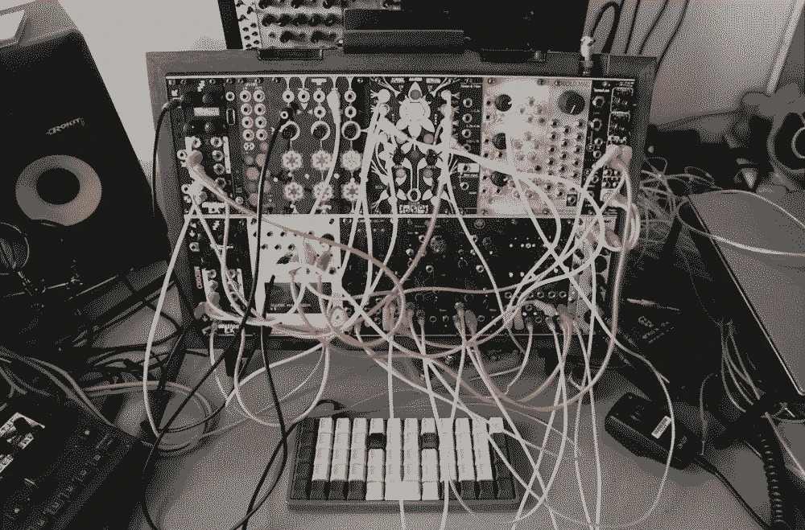
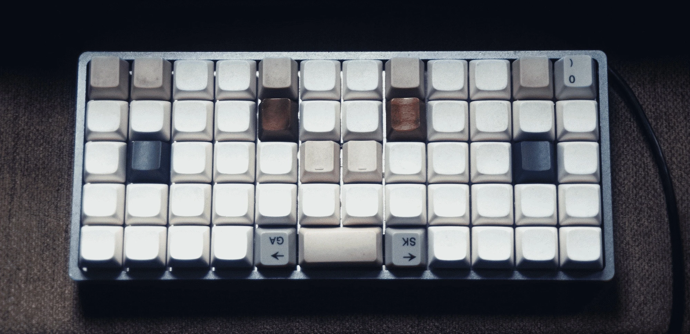
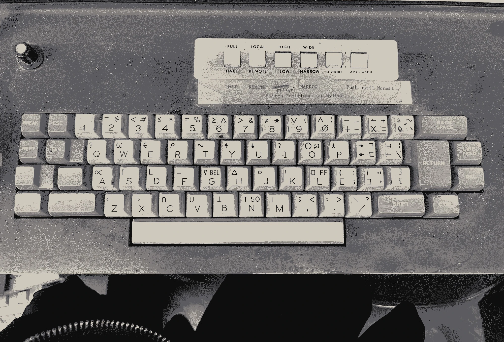
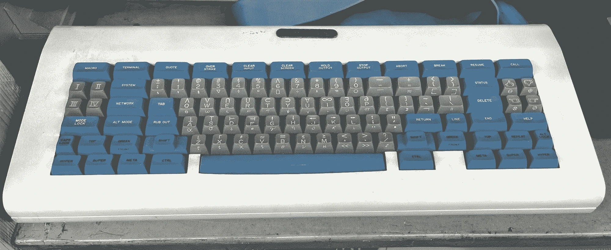
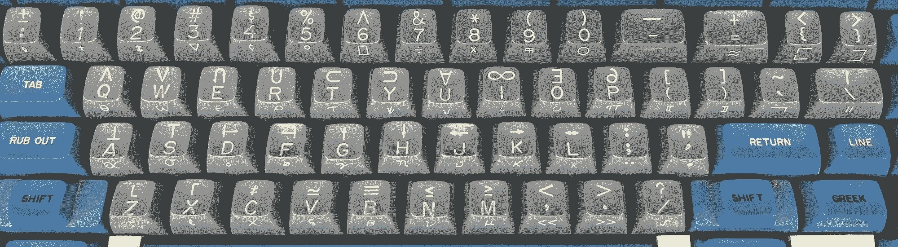
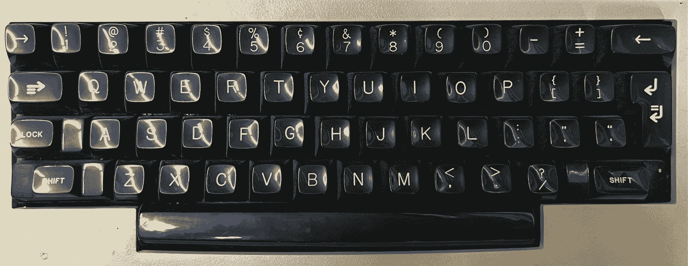
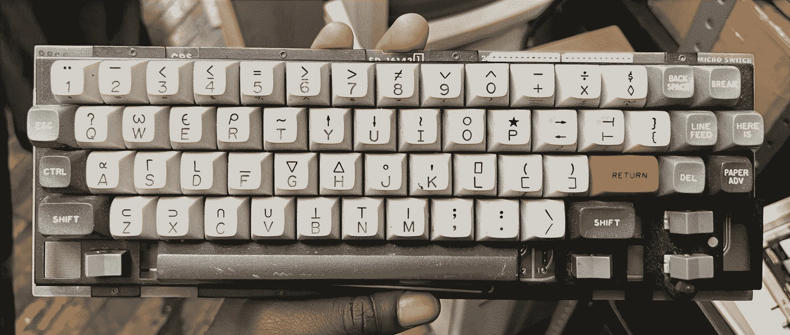
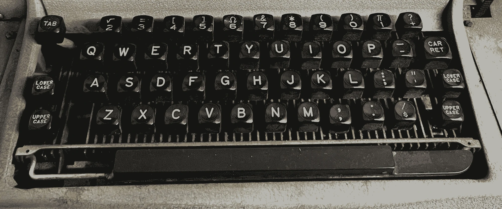

Keyboard:
This is my custom keyboard. I use this keyboard with the Monome Teletype eurorack module. It's the OLKB Preonic with an aluminum body. It has a custom keyboard layout. The keycaps are PBT and solid walnut. The switches are clicky, NovelKeys Sherbet.
Here are a few of my favorite keyboards, these pictures were taken at the computer museum at Atlantic Mills in Providence, RI:





